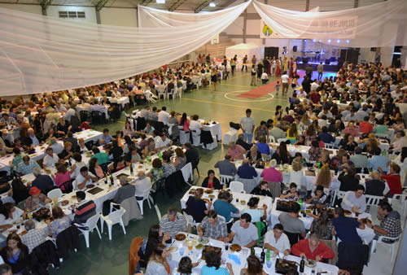

Real Chubut - Agencia de Noticias


Fiestas Populares y Carnavales durante este fin de semana largo en Chubut

Con el desarrollo de una extensa y variada gama de actividades recreativas y culturales, tendrán continuidad este fin de semana largo las Fiestas Populares 2017 en Chubut. Las celebraciones ya se iniciaron a mediados de semana en Comodoro Rivadavia, con una cargada agenda de actividades que se extenderán hasta el domingo 26, con motivo de los festejos por el 116º aniversario de la ciudad.
Asimismo en este último fin de semana del mes de febrero tendrá continuidad en la localidad de 28 de Julio, la Fiesta Provincial del Agricultor; y entre el sábado 25 y el domingo 26 tendrán lugar la Fiesta Provincial de las Bellezas Naturales, en Puerto Patriada; la Fiesta Provincial del Pulpo, en Playa Magagna; la Fiesta Provincial del Chivito, en El Escorial; y la Fiesta Regional del Jinete Reservado, en Esquel.
Cabe señalar que tanto de la Fiesta de las Bellezas Naturales, en Puerto Patriada, y la del Chivito, en El Escorial, se estaría esperando la confirmación de las mismas por parte de las comisiones organizadoras. En tanto la Fiesta del Carnaval se celebrará el 25 y 26 en Trevelin; el 26 y 27 en Trelew; y el 27 y 28 en Comodoro Rivadavia. Asimismo este colorido festejo continuará este fin de semana en Dolavon, con actividades hasta el 4 de marzo, inclusive.
ANIVERSARIO DE COMODORO RIVADAVIA
En el marco del 116° aniversario de Comodoro Rivadavia, que se iniciaron con variadas actividades a mediados de semana, los días 23,24 y 25, se llevará a cabo en el Predio Ferial un festival con la presencia de una importante cantidad de figuras nacionales y de artistas de la región. Durante las jornadas acompañando los shows en vivo, se realizará un paseo de artesanos y diseñadores, actividades recreativas para la familia, puestos de comida, entre otras actividades.
El viernes 24, a partir de las 17 horas, comenzarán los espectáculos con la presentación de “La Sonora de Llegar”; El Desafío; Reina Bachata; Juan Amaya; Jamaikino; Guillermo González, Aylén Becerra; Sabor Canela; Cheremeques; Dejavu y de “Axel” y el Toro Quevedo. En tanto, el sábado 25 desde las 14 horas se podrá disfrutar de una jornada a puro rock and roll con Kamikaze; Viajeros del Rock; Herederos del Viento; Tierra de Locos; Horacio Cochiarella; Los Impostergables; La Cofradía; La Cuerda; Back Beat; Tierral Hard Blues; Skalopez; Alex y The Pandish; Alkimia; Fuera de Tiempo; De Santo Nada; Cosecha Especial; Rueda de Orfeo; Abelardos; Toco para vos; y “Kapanga”.
Para el domingo 25, desde las 11 horas, será el turno del folclore con Hugo Cunino Cedrón; Los Hermanos Nievas; Tano Soriani; Hermanos Arias; A Dentro Folk; Hitbands; Similares; Trasnoche; Fernando Aguilera; La Gozadera; Norali González y su Conjunto; Amulen; Mestizo Dúo; Nuestro Estilo; Sentimiento Andino; Sin Fronteras; Siete Poderes y un Sentimiento Camaruquero; y un Tributo a la Patagonia a cargo de Marcelo Falcón-Vasco Salaberry y sus Guitarras; y Oscar Payaguala. Asimismo se presentarán el ballet “El Camaruco”; Viviana Almirón y Dúo Geberovich–Klainer; Gonzalito Fernández; Rafael Quipildor; Esteban Salaberry y La Llave; Rubén Patagonia y el gran cierre con Peteco Carabajal.
FIESTA PROVINCIAL DEL AGRICULTOR
Este fin de semana, del 24 al 26, tendrá continuidad la Fiesta Provincial del Agricultor en la localidad valletana de 28 de Julio, ocasión en que se realizarán una serie de actividades recreativas y culturales, y actos oficiales de los festejos. El viernes, a las 19 horas, tendrá lugar la presentación del libro “TIR HALEN” de los autores: Rhys Roberts y Bethy Roberts; y se realizará un concierto de coros junto a las capillas galesa.
El sábado, a partir de las 11 horas, en el edificio municipal comenzará el acto oficial con la presencia de autoridades municipales y provinciales; a continuación se hará el traspaso de la obra homenaje al agricultor; y se ofrecerá una ofrenda a los agricultores.
A las 22 horas, el Gimnasio Municipal será el lugar para la cena del aniversario; se realizará la elección de la Reina de la Fiesta y el gran baile con Martín y su banda Deleite y Los solistas del Valle.
En tanto que el domingo será el homenaje a Melville “Melvin” Richards, a las 17 horas en el Predio Ferial; habrá variadas actividades infantiles y la presentación de Los Solistas del Valle y músicos invitados.
FIESTA PROVINCIAL DEL PULPO
La Fiesta Provincial del Pulpo tendrá lugar el 25 y 26 de febrero tendrá lugar será en el predio de Playa Bonita, en el Complejo Playa Magagna. En la ocasión los visitantes podrán disfrutar de espectáculos musicales, puestos artesanales y gastronómicos, actividades deportivas, entre otros. Asimismo, durante el festejo se elegirá la Reina Provincial del Pulpo, Miss Magagna y en las categorías infantiles, a Miss Pulpito, Miss Mini Magagna y el Mini Rey del Pulpo.
FIESTA REGIONAL DEL JINETE RESERVADO
En el Campo de Jineteada “José Codesal”, y en el marco del 111º aniversario de la ciudad de Esquel, el 25 y 26 de febrero la tradicional Fiesta del Jinete y Reservado. Para los festejos se han organizado una serie de competencias hípicas y de destrezas gauchas, con importantes premios en juego.
Las actividades en el campo de jineteada, ubicado en la Ruta 259 a 4 km de Esquel, comenzarán el sábado a partir de las 15 horas con la monta de petisos, con 2.500 pesos y trofeos en premios; pruebas de riendas para menores, con 1.000 pesos de premio, y para mayores que tendrá 1 potrillo como premio mayor y de 4.000 pesos al 2º premio. A las 19 tendrá lugar las montas en clinas, con 10 jinetes invitados; y continuación la rueda de grupa, con 9.000 pesos en premios. El domingo continuará desde las 10 horas con la rueda de grupa, y con la rueda de bastos con encimera, que tendrá 12.000 pesos en premios.
Posteriormente se hará un almuerzo criollo, con 5 vaquillonas asadas. El acto oficial será a las 14:30 horas, y a continuación se disputarán las finales en pruebas de riendas; el desafío de tropillas, con 45.000 pesos en premios. A las 18 se realizará el Gran Bingo Familiar, y la entrega de premios.
PUBLICIDAD